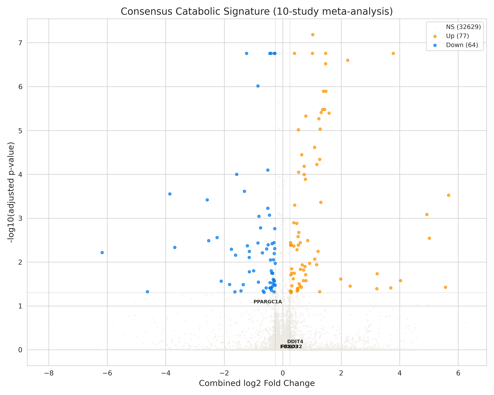
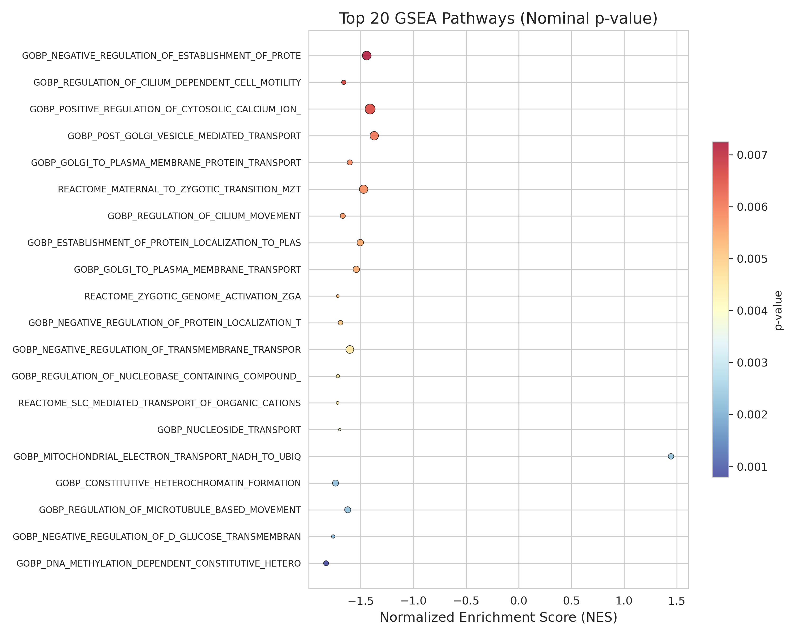
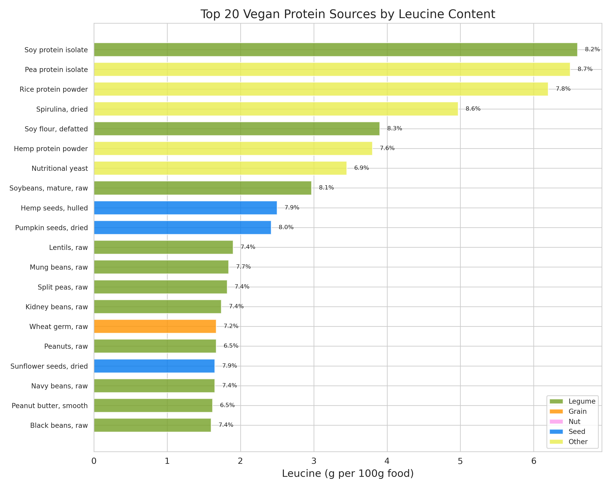
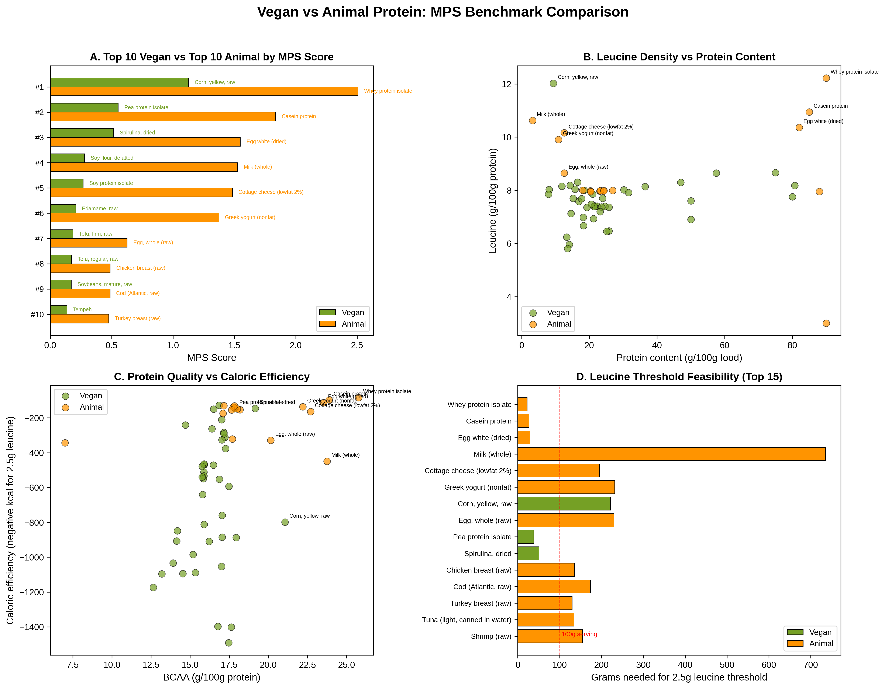

Spaceflight-induced muscle atrophy remains a principal barrier to long-duration space exploration, and its molecular drivers are incompletely translated into actionable countermeasures. We performed a cross-species random-effects meta-analysis of 10 transcriptomic datasets from the NASA Open Science Data Repository (OSDR), encompassing rodent spaceflight (OSD-21, OSD-111, OSD-135, OSD-401), human cell culture spaceflight (OSD-684), human astronaut cfRNA (OSD-530, GSE213808), Inspiration4 crew blood transcriptomics (OSD-569, OSD-571), and ground-based bed rest analogs (OSD-370). After mapping all genes to human orthologs, we derived a consensus catabolic signature of 141 differentially expressed genes (77 up-regulated, 64 down-regulated; |log2FC| > 0.25, adjusted p < 0.05) from 32,770 tested genes. The signature was dominated by mitochondrial electron transport chain (ETC) genes (MT-ND1 through MT-ND6, MT-CO2, MT-CYB, MT-ATP8; log2FC +1.23 to +1.59) and included the master mitochondrial biogenesis regulator PPARGC1A/PGC-1α (log2FC = −0.51, p_adj = 0.092) among down-regulated genes. Gene set enrichment analysis across 6,877 pathways revealed nominal enrichment of mitochondrial NADH-to-ubiquinone electron transport (NES = +1.45, p = 0.002) and mitochondrial translation (NES = +1.34, p = 0.011). Connectivity mapping against LINCS L1000 perturbation signatures (559 compounds ranked, 182 clinically annotated) and a curated database of 31 nutritional supplements identified HMB, CoQ10, creatine, vitamin D3, and resveratrol as top counter-catabolic candidates. Nutritional translation using published amino acid composition data for 41 vegan protein sources identified pea protein isolate (leucine 6.50 g/100 g, MPS score 2.25) and soy protein isolate (leucine 6.60 g/100 g, MPS score 2.11) as optimal plant-based protein sources for meeting the 2.5 g leucine per meal threshold for muscle protein synthesis activation. Optimized meal combinations achieved >3.2 g leucine and >39 g protein per serving. These results provide a reproducible, data-driven framework linking spaceflight transcriptomics to evidence-based nutritional countermeasures applicable to both astronaut health and terrestrial disuse atrophy.
Consensus spaceflight muscle atrophy & translation to plant-based countermeasures
A cross-species meta-analysis of NASA OSDR transcriptomics, pathway mapping, and translation to optimized vegan protein combinations meeting the leucine and protein thresholds for muscle protein synthesis.
Headline: A 141-gene cross-species spaceflight atrophy signature, dominated by mitochondrial ETC genes, is reversed by HMB, CoQ10, creatine, vitamin D3, and resveratrol. Plant-based countermeasure optimization identifies pea and soy isolates as optimal leucine sources.
Abstract
Highlights
141 Atrophy Genes
Consensus signature mapped across 10 studies spanning human crew, rodent flights, and bed rest analogs.
Mitochondrial ETC Up
Up-regulation of respiratory complex genes ND1-ND6, CO2, CYB, ATP8; down-regulation of PGC-1α.
Connectivity Screen
Drug reversal analysis nominates clinically-backed HMB, CoQ10, creatine, vitamin D3, and resveratrol.
Vegan Leucine Benchmark
Optimal plant-based formulations using pea/soy isolates to reach the critical 2.5g leucine threshold.
Selected figures




Data & code
- Manuscript: Markdown Draft · Final COUNTERMEASURES PDF Report
- Result tables:
tables/(Consensus signatures, supplement docking results, amino acid database, and optimized meal combinations) - Figures:
figures/(Volcano plots, GSEA dotplots, amino acid heatmaps, and benchmarking profiles) - In-silico Validation:
validation/(AutoDock Vina molecular docking results and the C2C12 wet-lab validation protocol)
Independent research. Not affiliated with or endorsed by NASA or JAXA. Reference data (NASA OSDR, LINCS L1000) remain subject to their own terms; cite the original accessions.